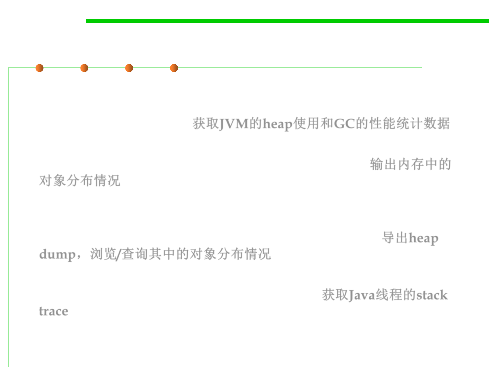

8.2 Dynamic Program Analysis Methods and Tools
List of common command-line profiling tools
▪ jstat: displaying performance statistics for an instrumented
JVMs, especially memory performance such as heap usage and
garbage collection (GC). 获取JVM的heap使用和GC的性能统计数据
▪ jmap prints shared object memory maps or heap memory details of
a given process or core file or a remote debug server. 输出内存中的
对象分布情况
▪ jhat parses a java heap dump file and launches a webserver,
enabling to browse heap dumps using web browser. OQL is
offered to query various information from heap dump. 导出heap
dump，浏览/查询其中的对象分布情况
▪ jstack prints the stack traces of Java threads for a given Java
process or core file or a remote debug server. 获取Java线程的stack
trace